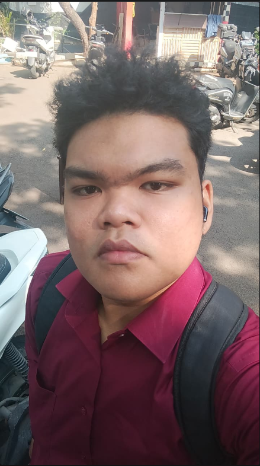
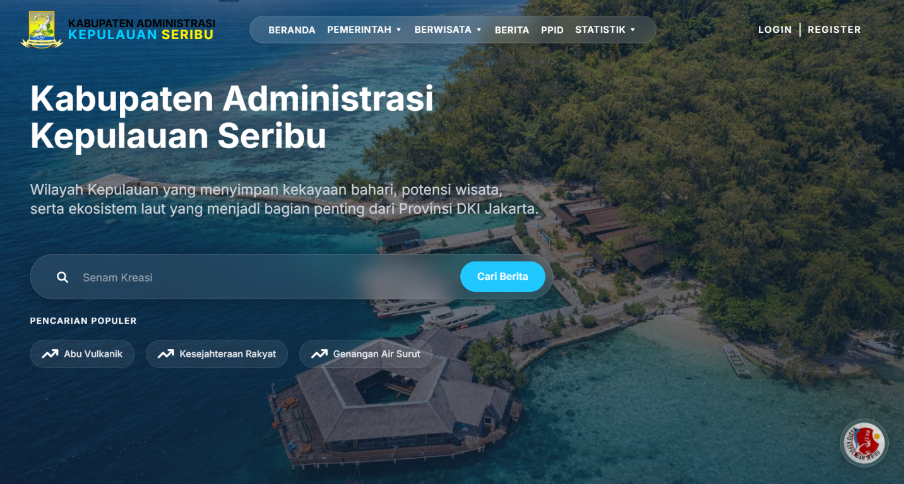
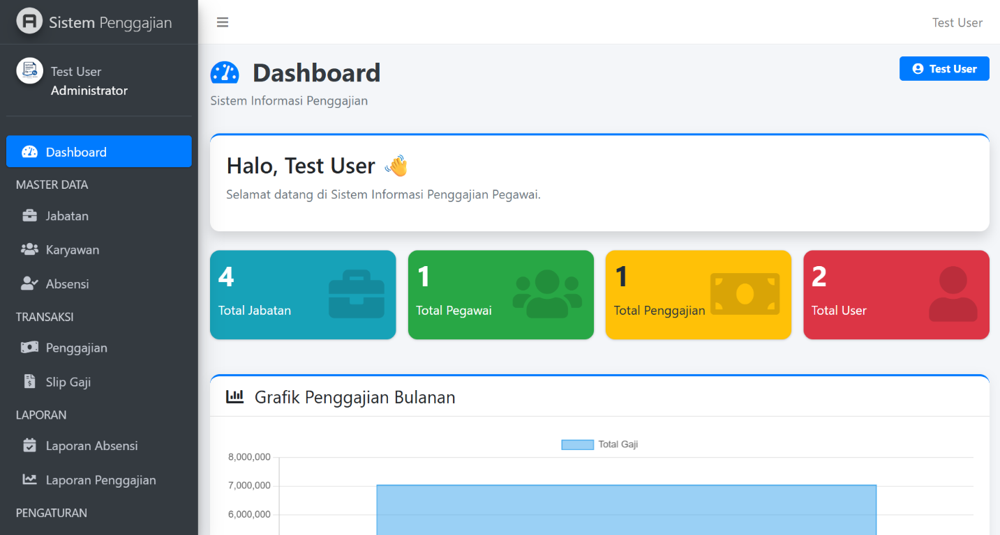
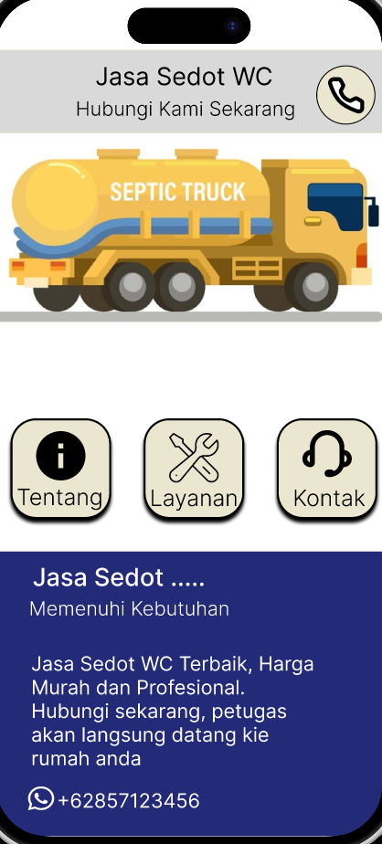

FGM — 01✦

Fresly Gabriel
Marpaung.
Marpaung.
FRONT-END DEVELOPER
HTML · CSS · JSPORTFOLIO / 2026
Menyiapkan pengalaman digital...
Halo, selamat datang di portfolio saya

01 / ABOUT ME
Mengenal latar belakang, pengalaman, dan hal-hal yang saya sukai dalam proses pengembangan digital.
Halo, saya Fresly Gabriel Marpaung, mahasiswa Sistem Informasi di Universitas Bina Sarana Informatika yang berminat berkarier sebagai Front-End Developer dan mendalami desain antarmuka.
Saya memiliki pengalaman magang dalam mengimplementasikan rancangan Figma menjadi website menggunakan HTML, CSS, dan JavaScript. Saya mengembangkan halaman Beranda, Statistik, dan Informasi, termasuk penyesuaian tampilan untuk desktop, tablet, dan ponsel Android.
Saya juga pernah berkontribusi dalam proyek desain antarmuka aplikasi mobile secara berkelompok. Dalam setiap proses, saya berusaha menjaga tampilan tetap rapi, konsisten, dan mudah digunakan.
S1 Sistem Informasi · Fakultas Teknologi Informasi
Mengembangkan antarmuka Website Resmi Kabupaten Administrasi Kepulauan Seribu, termasuk halaman Beranda, Statistik, dan Informasi dengan tampilan responsif untuk desktop, tablet, dan ponsel Android.
A LITTLE CURIOSITY, A LOT OF IDEAS
Saya menikmati proses mempelajari teknologi, menyusun struktur antarmuka, dan melihat sebuah rancangan berkembang menjadi website yang bisa digunakan.
Lihat keahlian02 / SKILLS & TECHNOLOGIES
Teknologi dan tools yang pernah saya gunakan dalam proses desain, implementasi, serta pengembangan aplikasi.
Membangun antarmuka web yang fungsional, responsif, dan interaktif.
Berkontribusi dalam rancangan antarmuka dan implementasi desain.
Memahami kebutuhan dan pemodelan sistem.
Perangkat yang mendukung alur kerja desain dan pengembangan.
03 / SELECTED WORKS
Proyek magang, bootcamp, dan akademik yang menunjukkan proses belajar serta pengalaman saya.

PROJECT / 001Mengimplementasikan desain Figma menjadi halaman Beranda, Statistik, dan Informasi, serta menyesuaikan tampilan untuk desktop, tablet, dan ponsel Android.

ACADEMIC / 002Aplikasi pengelolaan data pegawai, jabatan, penggajian, dan absensi dengan dashboard administrasi.

UI/UX PROJECT / 003Proyek desain antarmuka aplikasi mobile yang dikerjakan bersama tim menggunakan Figma, dengan rancangan halaman autentikasi dan informasi layanan.
04 / WORKFLOW
Tahapan sederhana yang saya gunakan saat mengimplementasikan rancangan menjadi antarmuka web.
Mempelajari rancangan dan kebutuhan tampilan dari Figma.
Menyusun struktur halaman menggunakan HTML dan CSS.
Menggunakan JavaScript untuk mendukung fungsi antarmuka.
Memeriksa tampilan pada desktop, tablet, dan ponsel.
05 / GET IN TOUCH
PUNYA PROYEK ATAU KESEMPATAN MENARIK?
Saya terbuka untuk kesempatan magang, kolaborasi, dan diskusi seputar pengembangan website.